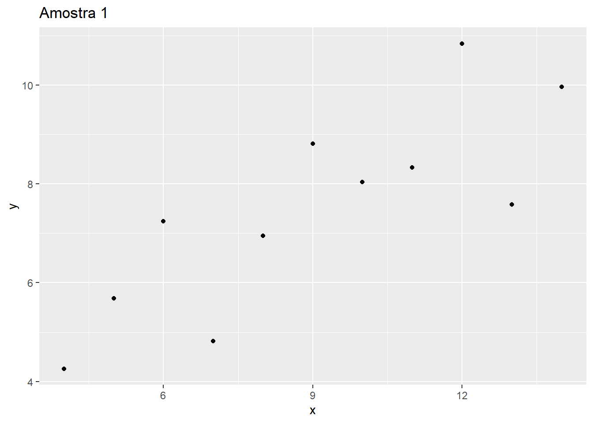
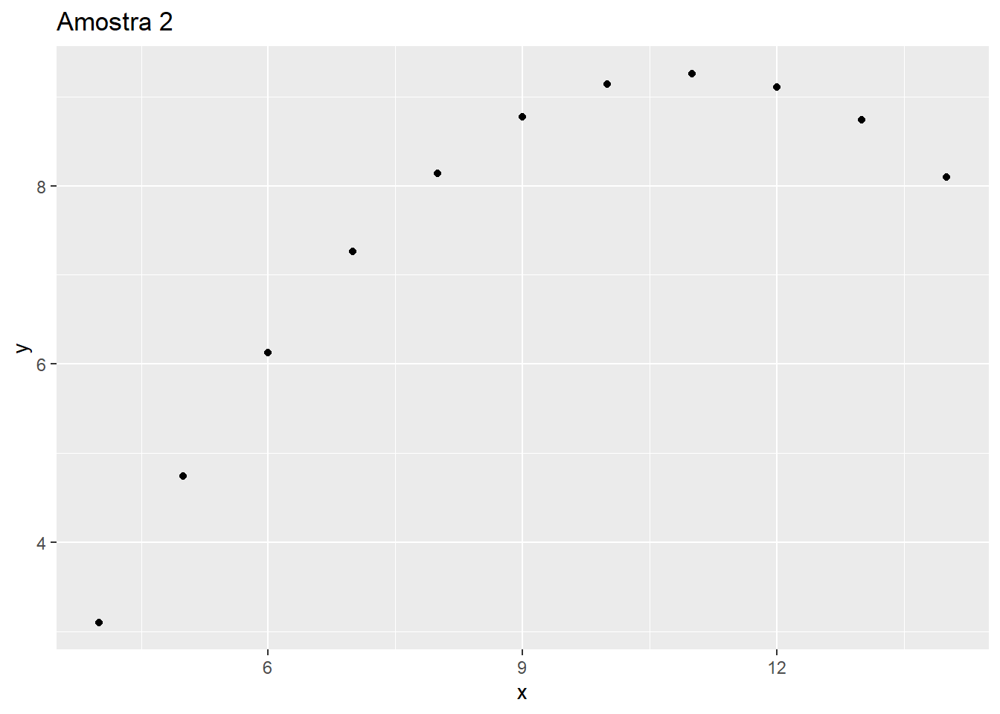

Aprenda Estatística
2024-03-09
Capítulo 1 Introdução
É importante começarmos pelos conceitos básicos para criar um vocabulário consistente e permitir uma comunicação clara entre os interessados em discutir e aprender estatística e análise de dados.
1.1 Estimativas de localização
Muitas vezes é conveniente representar um conjunto de números de uma forma mais simples. Nem sempre temos a possibilidade de lidar com vários números, por limitação ou por falta de praticidade. Por exemplo, imagine uma sala de aula com 5 estudantes, vamos montar uma lista da idade de todos os estudantes nessa sala. Utilizaremos a linguagem R.
## [1] 14 15 16 14 17Podemos representar essa lista com um número mais simples, que pode resumir ou representar aquela lista original. Para isso, existem algumas estimativas de localização que podem ser utilizadas. As mais comuns são média e mediana.
1.1.1 Média
A média é calculada dividindo a soma de todos os números da lista pela quantidade de itens. Sua fórmula matemática é apresentada em FIGURA XXX. Onde i é a quantidade de itens da lista e \(x_i\) é o enésimo item da lista. O termo média também pode ser representado pelo símbolo \(X_\)
No nosso exemplo se fossemos calcular manualmente a média da lista idade, o cálculo seria:
## [1] 15.2Na linguagem de programação R o código para criar uma lista e verificar a média dessa lista, seria o seguinte:
## [1] 15.2A função mean no r recebe como parâmetro uma lista de itens e retorna a média da lista de números.
1.2 Tipo do Dado
É necessário classificar o tipo do dado pois os algoritmos de aprendizagem de máquina, ou os modelos estatísticos, irão funcionar com determinados tipos. Com o conhecimento do tipo do dado que estamos lidando poderemos realizar as conversões necessárias.
O tipo do dado pode ser numérico ou categórico.
Dado do tipo numérico é expresso geralmente como um número inteiro ou real. Porém, existem casos em que números inteiros expressam dados categóricos. Já o dado do tipo categórico está relacionado a uma classificação do dado.
1.2.1 Numérico
O tipo do dado numérico podem ser contínuo ou discreto.
Um dado numérico contínuo é quando o dado pode ser qualquer número em um intervalo de números reais - lembrando que o conjunto de número reais engloba os números inteiros -. Geralmente é o resultado de uma medida, por exemplo, a altura dos estudantes é um dado do tipo numérico contínuo.
O dado numérico discreto geralmente é resultado de uma contagem - um número inteiro -, por exemplo, a idade é uma contagem de anos do estudante, é um dado numérico discreto.
Na nossa lista de idades a idade é um dado do estudante do tipo numérico discreto.
1.2.2 Categórico
Um dado é do tipo categórico quando ele faz parte de um conjunto, de uma classe ou de uma categoria.
O dado categórico pode ser binário ou ordinal, ou nenhuma das duas subcategorias.
Um exemplo de dado categórico, é uma lista com as cores preferidas dos estudantes, ou o estado civil de uma pessoa.
O dado do tipo categórico binário é um tipo especial quando ele somente pode assumir dois valores no universo de valores possíveis. Por exemplo 0 ou 1, existente ou ausente, true ou false, sim e não.
O dado do tipo categórico ordinal também é um tipo especial, é quando ele faz parte de um conjunto com determinada ordem, por exemplo, imagine a classificação de altura de estudantes somente com os valores alto, médio e baixo. Nesse exemplo existe uma ordem, o aluno com altura classificado como baixo tem uma altura menor do que o aluno com altura média.
1.3 Estatistical Data Analisys
Um dos pioneiros na definição da área de análise exploratória de dados (em inglês Estatistical Data Analisys, ou EDA) foi Tukey (1997) (Tukey et al. 1977). Tukey (1997) afirmou que era anteriormente mais focado em inferências a partir de exemplos particulares para a população geral. Grande foco dele e de outros estatísticos estavam em desenvolver novas técnicas para inferência. Porém, a partir de sua experiência - e depois de reflexão, ele chega a conclusão de que o foco, dele e de outros estatísticos, seria melhor aplicado no desenvolvimento de técnicas para a análise dos dados, anterior a esse processo inferência. Era nos procedimentos de estruturar os dados que na pratica estava o verdadeiro desafio. Problemas tais como, lidar com dados faltantes e com dados outliers traziam impactos negativos. Sua recomendação era a construção de uma mudança de paradigma e novos estudos. Sua visão é que isso iria trazer enorme avanços como um todo.
Podemos considerar a necessidade de estudos anterior ao processo de inferência analisando o exemplo criado por Ancobe.
library(data.table)
library(ggplot2)
x <- c(10, 8, 13, 9, 11, 14, 6, 4 , 12, 7, 5)
y <- c(8.04, 6.95, 7.58, 8.81, 8.33, 9.96, 7.24, 4.26, 10.84, 4.82, 5.68)
DT = data.table(x, y)
ggplot(DT, mapping = aes(x = x, y =y)) +
geom_point() +
labs(title = "Amostra 1")
Veja a imagem “Amostra 1” acima. Nela visualmente percebemos uma relação entra duas variáveis, podemos confirmar isso analisando o gráfico de pontos e o valor da correlação.
## [1] 0.8164205library(data.table)
library(ggplot2)
x <- c(10, 8, 13, 9, 11, 14, 6, 4 , 12, 7, 5)
y <- c(9.14, 8.14, 8.74,8.77,9.26,8.1,6.13,3.1,9.11,7.26,4.74)
DT = data.table(x, y)
ggplot(DT, mapping = aes(x = x, y =y)) +
geom_point() +
labs(title = "Amostra 2")